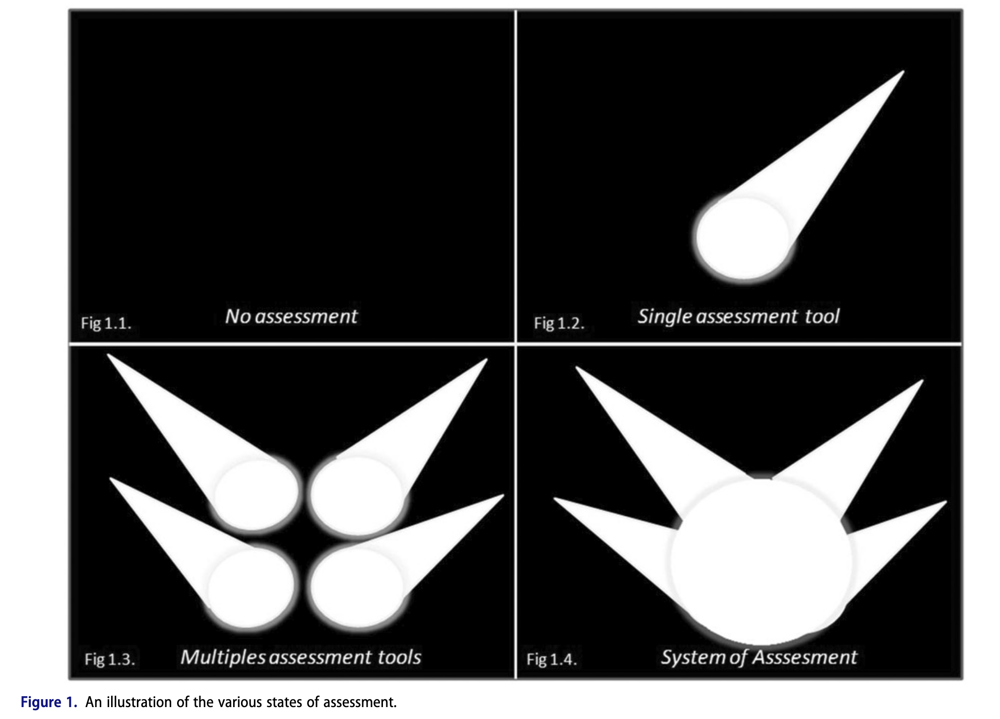

Authentic Assessment - Foundation and application
Authentic Assessment (AA)
3 Main attributes of AA
Formative
Longitudinal
Authenticity
Real-world situation
Related-competencies
Consensus of Good Assessment
Where the authentic assessment shine in the Ottawa consensus of good assessment?
- Validity
- Reliability
- Equivalence
- Feasibility
- Educational effect
- Catalytic effect
- Acceptability
Authenticity vs Fidelity
Higher Fidelity introduces Higher cognitive load
Low Cognitive Load
Authenticity? - Documentation

Authenticity? - OSCE
| Patient - คุณสมชาย แข็งแรง | Doctor - นศพ.ปุญญภัทร |
|---|---|
| สวัสดีครับ คุณสมชาย ผม นศพ.ปุญญภัทร ปี 6 | |
| สวัสดีครับหมอ ผมหายใจเหนื่อยมา 2-3 วันแล้วครับ | อาการเหนื่อยเป็นยังไงหรอครับ |
| เวลาผมเดิน 30-40 นาที มันก็จะเริ่มเหนื่อย | มีโรคประจำตัวอะไรบ้างครับ |
| โรคประจำตัว เช่น โรคอะไรบ้างหรอหมอ |
Authenticity? - WPBA
Does authentic assessment undermine authentic learning?
- Yes, only if students perceive it as high-stake exam and judgmental
- No, if students could show undercentainty and vulnaribility
- No, if the WPA is authentic and acknowledge complexity of case
Authenticity? - Projects
Check Reliability

References
Harden, Ronald M., and Geoffrey R. Norman, eds. 2016. The Definitive Guide to the OSCE: The Objective Structured Clinical Examination as a Performance Assessment. Edinburgh: Elsevier.
Hatala, Rose, and Rachel H. Ellaway. 2024. “Does Authentic Assessment Undermine Authentic Learning?” Advances in Health Sciences Education 29 (4): 1067–70. https://doi.org/10.1007/s10459-024-10361-z.
Norcini, John, M. Brownell Anderson, Valdes Bollela, Vanessa Burch, Manuel João Costa, Robbert Duvivier, Richard Hays, Maria Felisa Palacios Mackay, Trudie Roberts, and David Swanson. 2018. “2018 Consensus Framework for Good Assessment.” Medical Teacher 40 (11): 1102–9. https://doi.org/10.1080/0142159X.2018.1500016.